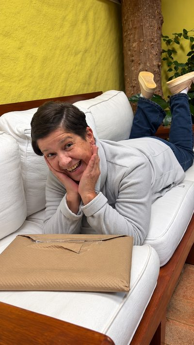
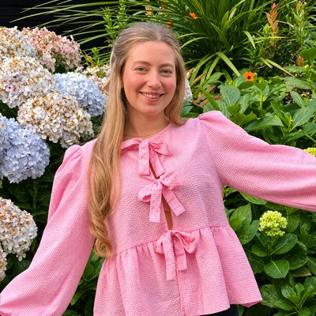

EL ORIGEN DEL NOMBRE
Cuckoo Banana
Viene de un apodo que un profesor le dio a Sandra cuando estudiaba Diseño de Interiores en Bauder College, en Estados Unidos, por su personalidad divertida y excéntrica.
SOBRE NOSOTRAS
Sandra comenzó a elaborar vitrales hace aproximadamente 25 años en su taller en las montañas de Heredia. Con el crecimiento de su presencia en redes sociales, el oficio se consolidó como Cuckoo Banana.

EL ORIGEN DEL NOMBRE
Viene de un apodo que un profesor le dio a Sandra cuando estudiaba Diseño de Interiores en Bauder College, en Estados Unidos, por su personalidad divertida y excéntrica.
NUESTRA ESENCIA
Cada vitral de Cuckoo Banana se elabora artesanalmente en nuestro taller en las montañas de Heredia, con atención a los colores, las formas y los detalles. Por ser hecho a mano, cada pieza puede variar ligeramente.

Artista y diseñadora
Diseña y elabora cada pieza.

Ventas, atención y contenido
Atiende pedidos, clientas y redes sociales.